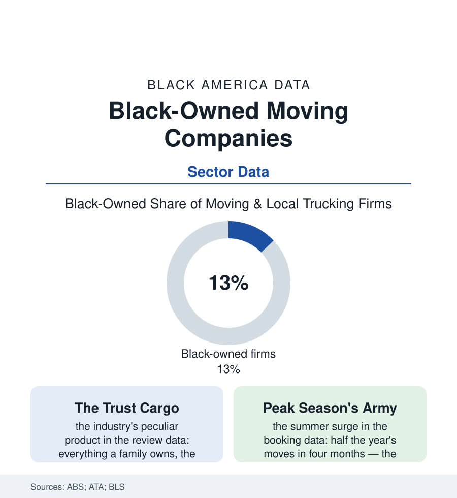

Black Business
Everything They Own: Black-Owned Moving Companies
The moving company holds a family's whole material life in its hands for one day — a trust business built on muscle, logistics, and reputation. The moving file.

Every business holds something of the customer's; a moving company holds everything — the furniture, the photographs, the safe, the whole material autobiography of a household, loaded by strangers in the morning and unloaded, one hopes intact, by night. Black-owned moving firms run a deep bench in this trust industry, from the two-man truck of the neighborhood's referrals to the interstate van-line agents. This article reads the moving file.
Muscle, Logistics, and the Review Economy
The trade's economics are the service file's in their most physical form: the capital ladder beginning at the truck itself (the used box truck as the firm's founding asset — the financing file's terms deciding whose ladder starts), the labor model built on the strong backs of the employment file (the mover's day the injury tables know well — the back, the stairs, the August heat of the grounds file moved indoors), and the demand's savage calendar (the industry's summer peak — half the year's household moves compressed into the lease-turnover months in the booking data, the firm's whole quality decided by the crews it can field in July). The reputation economy runs the modern shelf: the review platforms as the firm's storefront (the moving industry among the review economy's most extreme — the purchase unrepeatable, the customer researching like a detective, the five-star average the difference between the phone ringing and silence), the referral circuits beneath them (the realtor's card file, the apartment managers, the churches' moving-day ministries — the community's families carried, in both directions of every migration in this atlas, by the firms its own people own: the grandmother's downsize, the graduate's first city, the divorce's two trucks to two addresses, the estate's final emptying — the mover as the migration file's hired witness, present at every threshold the census counts a year later as a changed address). The interstate tier adds the regulatory shelf (the federal motor-carrier authorities, the van lines' agency system — the Black agent firms flying national flags over local ownership in the franchise file's pattern) and the fraud file's shadow (the rogue-operator scams of the consumer-protection record — the hostage-load racket whose existence taxes every honest firm's sales call with the customer's suspicion, the industry's associations running the certification programs that answer it).
One market towers in the industry's institutional data and belongs in this file: the military move. The Defense Department is among the largest single buyers of household moving on earth — hundreds of thousands of service families relocated on orders each year through the contracted carrier system — and the military towns of the cities file (the Fayettesvilles, the Killeens, the Norfolks) support mover economies keyed to the change-of-station calendar, their Black-owned firms crewed substantially by veterans of the moving they now sell, the service file's alumni carrying the civilian families of the next postings. The contract's quality regime — the scored surveys, the claims data — is the review economy in uniform, and the shelf's firms in the garrison towns run on its grades like report cards.
The Counter-Cyclical Heart
The file's distinctive economics hide in the demand's composition: people move in every economy (the job, the marriage, the eviction, the death — the life-event data indifferent to the business cycle), and the local mover's market is a metropolitan constant whose shares are won on reputation's compounding — which is why the shelf's Black firms include some of the business section's great longevity stories (the family firms in their third generation in the city directories of the atlas's older cities, founded when the truck was the one capital asset a Black man could buy without a committee's permission, the firm's name passed down with the dollies). The growth rows of the current data run through the adjacent services the trust purchases: the packing and white-glove tiers, the senior-move management specialty (the aging file's downsizing industry — the certified move manager handling the eighty-year-old's threshold with the estate's whole diplomacy), the storage hybrid (the warehouse of the logistics file rented by the household), the corporate-relocation contracts of the procurement shelf. The census counts the firms under trucking's codes, easy to miss. The families they carried remember them by name — which, in the review economy's ledger, is exactly the asset the data are about.
Reading the Moving Data
The moving file is the business section's trust fall: a firm's whole product is the safe passage of other people's lives between addresses. Its Black shelf was built the slow way — one intact piano, one unbroken heirloom, one threshold at a time — and the reviews, the referrals, and the third-generation nameplates on the trucks are its audited statements.
More in Black Business
Black-Owned Businesses: Counts, Receipts, and the Representation Gap
About 161,000 Black-owned employer firms and three million solo ventures: how the Census Bureau counts Black business ownership, where firms concentrate, and the gap between population share and business share.
Black Median Net Worth: The Wealth Gap in Federal Reserve Data
The Federal Reserve puts Black median family net worth at $44,900, against $285,000 for White families — about 16 cents on the dollar. The widest gap in economic data.
Black Buying Power: The $1.8 Trillion Consumer Economy
Black buying power is estimated at about $1.8 trillion — larger than the economy of most nations. What the figure measures, who produces it, and what it buys.
Source: U.S. Census Bureau Annual Business Survey; American Trucking Associations moving data; Bureau of Labor Statistics; Small Business Administration research.